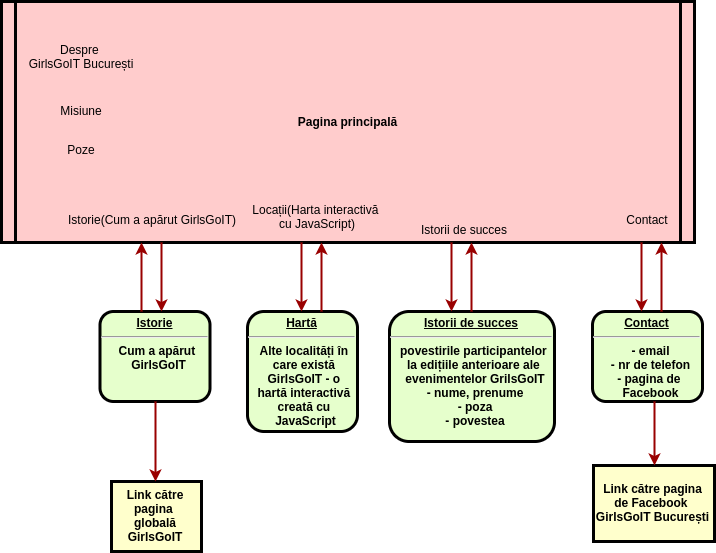

Scop
Scopul acestui website este de a prezenta informații despre activitatea GirlsGoIT București, care încurajează fetele să urmeze o carieră în domeniul IT.
Target group(s)
- Tinere cu vârsta cuprinsă între 16-25 ani (eleve și studente)
- Persoane din domeniul IT care vor să devină mentori/traineri GirlsGoIT
Descriere
Website-ul GirlsGoIT București este un site de prezentare a activității GirlsGoIT București.
Aici vor fi postate informații despre programele, evenimentele, taberele de vară și alte activități organizate de către GirlsGoIT București.
De asemenea, site-ul va conține o pagină cu o hartă și link-uri către alte localități în care se desfășoară GirlsGoIT.
Structură

Cuvinte cheie
- Principale: GirlsGoIT, IT
- Pagina principală: GirlsGoIT, IT, fete, gender equality
- Pagina "Istorie": GirlsGoIT, IT, gender equality, Moldova, Moldova ICT Summit, TEKEDU, tabăra de vară
- Pagina "Locații:": GirlsGoIT, IT, hartă, locație, club local
- Pagina "Istorii de succes": GirlsGoIT, IT, participant(ă), carieră, comunitate, impact
- Pagina "Contact": GirlsGoIT, IT, email, persoana de contact
Alte Website-uri GirlsGoIT:
- Website-ul oficial GirlsGoIT: http://girlsgoit.org/
- Website-ul GirlsGoIT creat de participantele taberei de vară GirlsGoIT 2017: http://moldova.girlsgoit.org/
Analiza altor site-uri care au un scop similar
(sunt organizații de voluntariat, deci nu pot fi numite concurente) :
Website-ul GitrlsGoIT global: http://girlsgoit.org/
| Avantaje | Dezavantaje |
|---|---|
| combinație drăguță de culori și design modern | meniul este jos și nu e foarte intuitiv pentru utilizatori |
| folosește animații | nu are o hartă a tuturor locațiilor cluburilor locale GirlsGoIT |
| prezintă informații clare și detaliate | nu e foarte structurat în secțiuni și subsecțiuni |
| are pagina “In press” cu link-uri către alte website-uri ce fac referire la website |
Cuvinte-cheie:
- principale: GirlsGoIT; IT, women, girls
- pagina About us: mission, possibilities, GirlsGoIT; women, girls
- Pagina Istorie: GirlsGoIT, IT, gender equality, Moldova, Moldova ICT Summit, TEKEDU, tabăra de vară
- pagina Summer camp: STEM, camp, STEM ambassador, community
- pagina Boot camp: technology, communities
- pagina Annual forum: GirlsGoIT, women, girls, forum
- pagina News: inspiring, stories
Website-ul GirlsGoIT Moldova (creat de către participantele taberei de vară GirlsGoIT 2017): http://moldova.girlsgoit.org/
| Avantaje | Dezavantaje |
|---|---|
| design modern | meniul dispare când utilizatorul face scroll pe pagină |
| structurat bine în secțiuni și subsecțiuni | meniul conține doar link-uri externe, nu conține link-uri către pagini de pe site, astfel inițial pare că e doar o pagină, dar de fapt sunt pagini separate și pentru evenimente, istorii de succes, etc. |
| responsive | nu are o hartă a tuturor locațiilor cluburilor locale GirlsGoIT |
Cuvinte-cheie:
- principale: GirlsGoIT, IT, fete, STEM
- pagina principala: GirlsGoIT, STEM, acces
- Pagina Evenimente: eveniment
Codette: http://codette.ro/
| Avantaje | Dezavantaje |
|---|---|
| este structurat în capitole și subcapitole | nu există o “unitate” între paginile site-ului, de ex. Pagina http://codette.ro/celebration/ are un design și meniu total diferit de pagina principală |
| design ok | meniul pentru versiunea mobile acoperă toată pagina și e în stânga, chiar dacă poți face scroll pe pagină și se vede doar o parte mică din pagină |
| informațiile sunt prezentate clar |
Cuvinte-cheie:
- Principale: Codette, comunitate, fete, femei, IT
- Pagina principala: Codette, comunitate
- Pagina Codette traveler: grant, tech, Grace Hopper Celebration, înscriere
- Pagina Celebration day: Codette, conferință, celebration
Women in Technology: http://www.womenintechnology.org/
| Avantaje | Dezavantaje |
|---|---|
| designul header-ului și meniului e drăguț | prea multe chestii pe pagina |
| informația e structurată clar și ușor accesibilă din castegoriile din meniu | nu exista o unitate între elementele de design pe pagina principală |
| responsive | meniul pentru versiunea mobile conține prea multe link-uri și e greu să găsești link-ulde care ai nevoie |
| atributul keywords pentru tag-ul meta nu conține nici un cuvânt cheie | |
| atributul description pentru tag-ul meta nu conține nimic |
Cuvinte-cheie:
- Principale:Women in Technology, WIT
- Pagina principala: professional, women
- Pagina Leadership: leadership, skills, qualities, abilities
- Pagina Communications: communications, promotion, commitee
Girls Who Code https://girlswhocode.com
| Avantaje | Dezavantaje |
|---|---|
| meniu simplu și intuitiv de utilizat | în secțiunea Summer Immersion Program Partners, versiunea mobile, textul face overflow peste alt text |
| structurat în capitole și secțiuni | multe animații și elemente pe pagină, cu o conexiune mai lentă la internet se încarcă greu pagina |
| informațiile sunt prezentate foarte clar | |
| responsive | |
| link-urile cele mai importante sunt în meniu, cele mai puțin importante sunt în footer, dar sunt oricum accesibile |
Cuvinte-cheie:
- Principale: Girls Who Code, girls, technology, women
- Pagina principala: girls, gender gap, women
- Pagina Our mission: girls, technology, gender gap, students
- Pagina Outcomes and Impact:Girls Who Code, girls, women, jobs, computer
- Pagina Our values: girls, goals, Girls Who Code, values